9. REST Controller to find and add

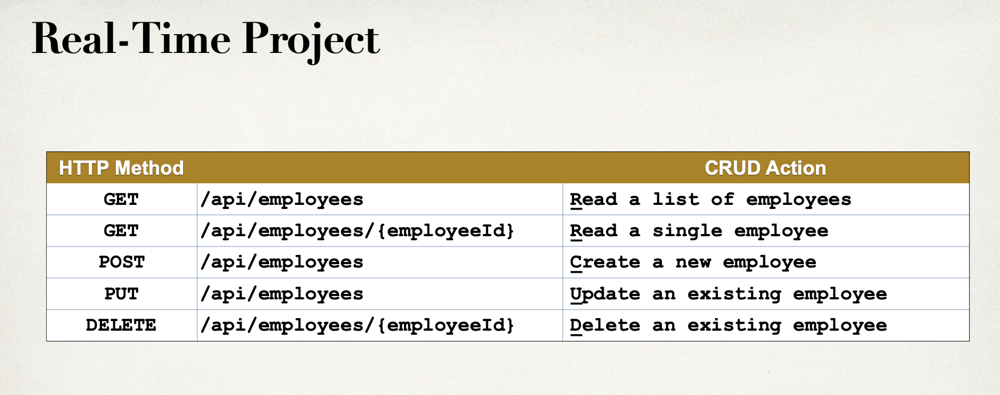
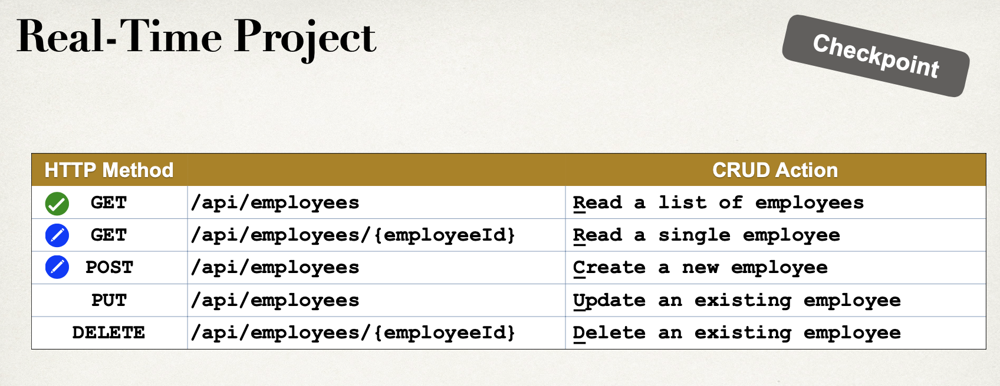
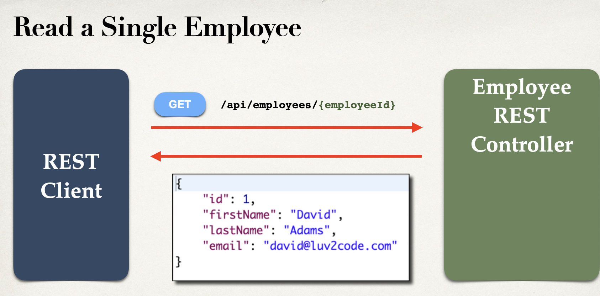
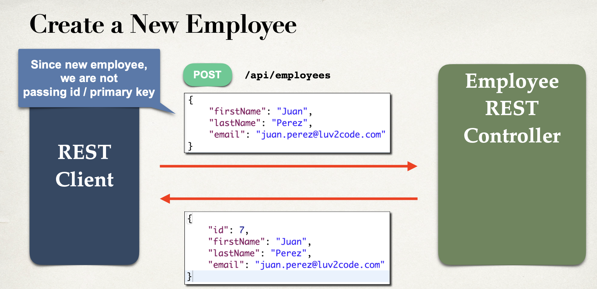
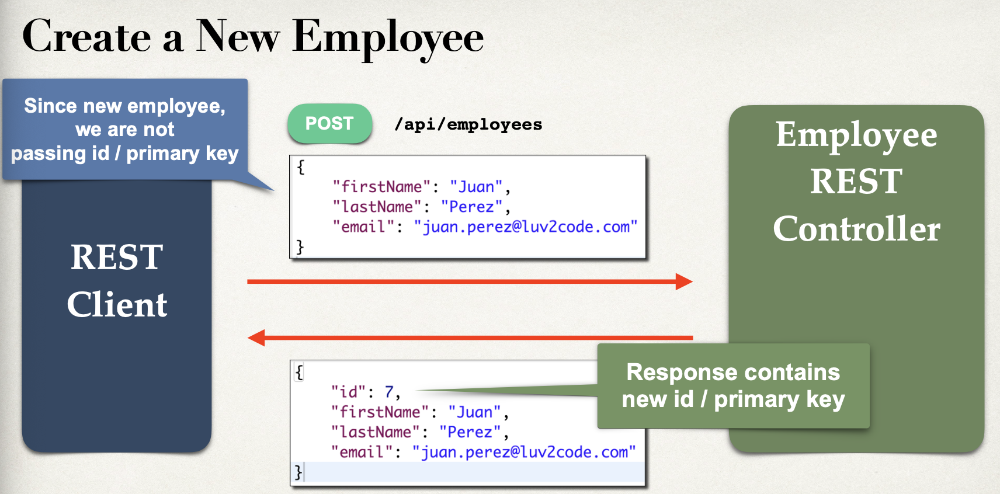
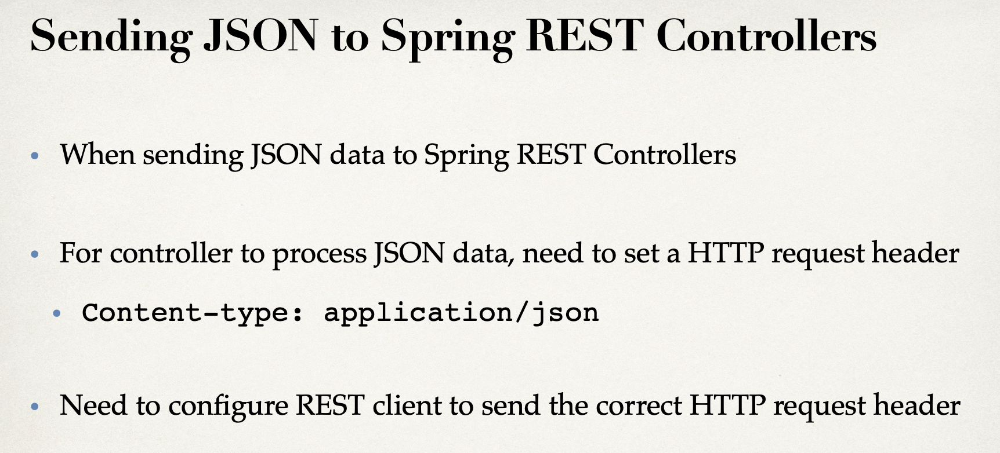
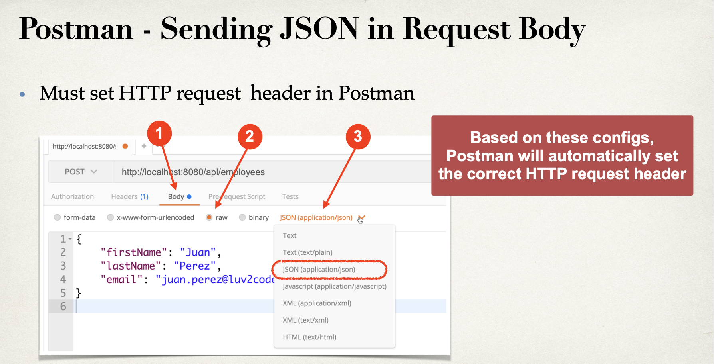
- update controller
@RestController
@RequestMapping("/api")
public class EmployeeRestController {
private EmployeeService employeeService;
//quick and dirty: inject employee dao
@Autowired
public EmployeeRestController(EmployeeService employeeService) {
this.employeeService = employeeService;
}
//expose "/employees" and return list of employee
@GetMapping("/employees")
public List<Employee> findAll() {
return employeeService.findAll();
}
//add mapping for GET /employees/{employeeId}
@GetMapping("/employees/{employeeId}")
public Employee getEmployee(@PathVariable int employeeId){
Employee theEmployee = employeeService.findById(employeeId);
if(theEmployee == null){
throw new RuntimeException("Employee id not found - " + employeeId);
}
return theEmployee;
}
}
- now let's test GET method by id
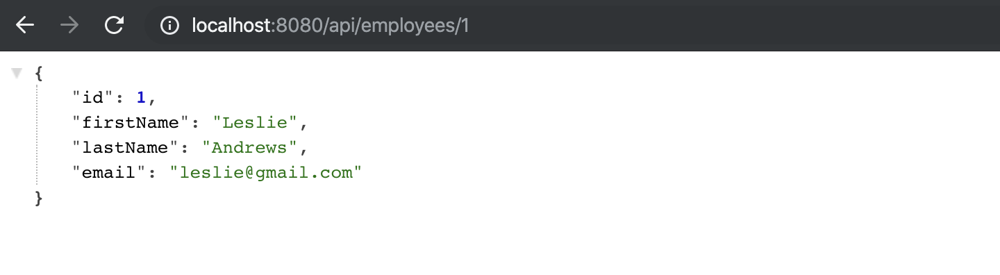
- OPEN Postman
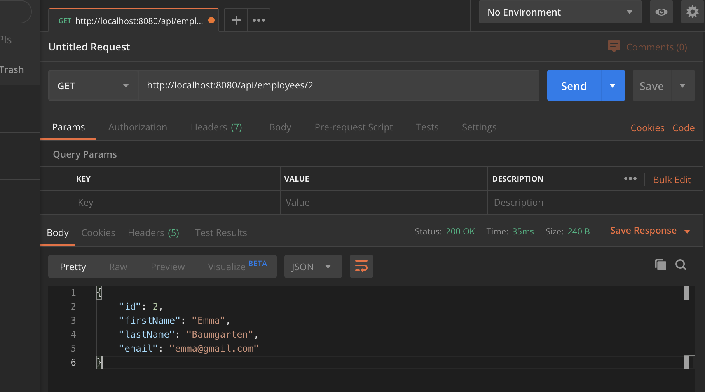
- get all
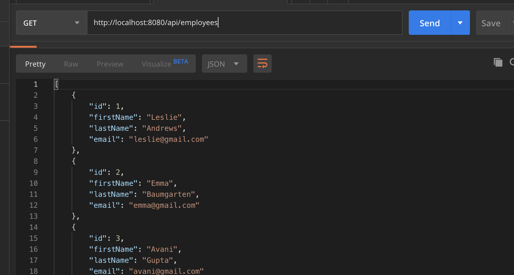
- Post method:
//add mapping for POST / employees - add new employee
@PostMapping("/employees")
public Employee addEmployee(@RequestBody Employee theEmployee){
//also jst in case they pass an id in JSON ... set id to 0
//this is to force a save of new item ... instead of update
theEmployee.setId(0);
employeeService.save(theEmployee);
return theEmployee;
}
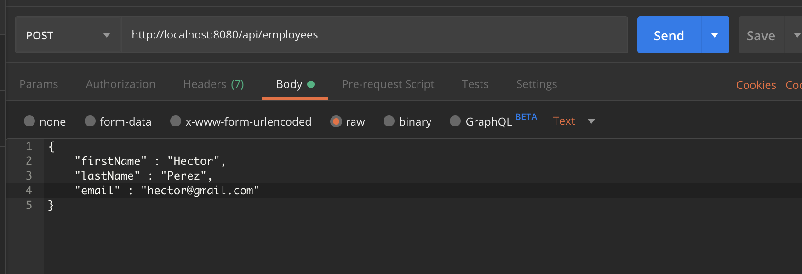
- chage to JSON
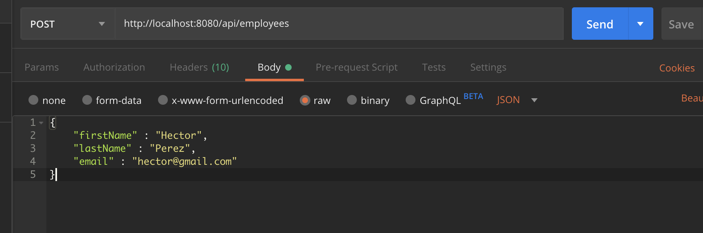
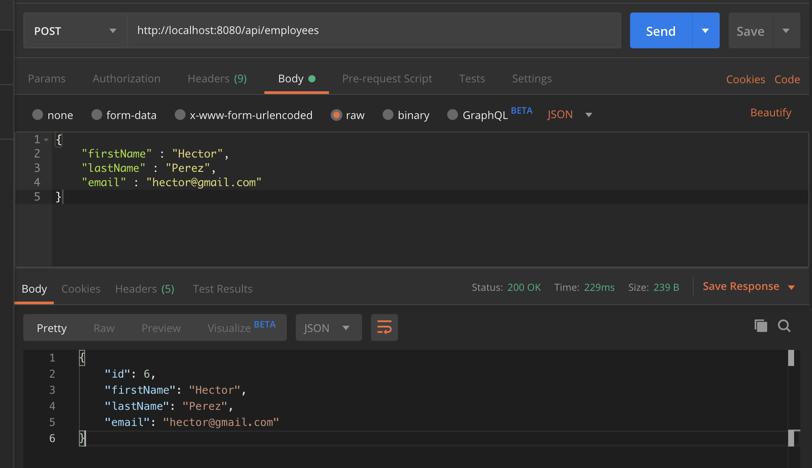
- success
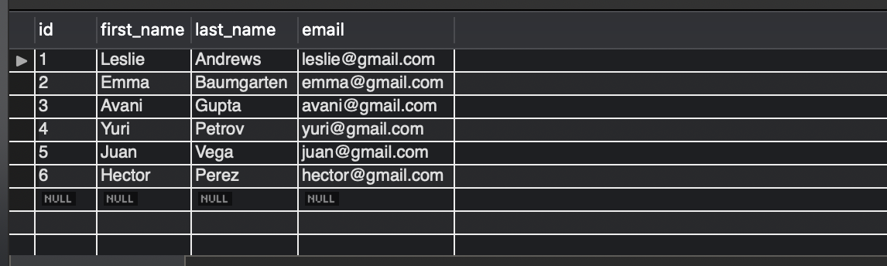